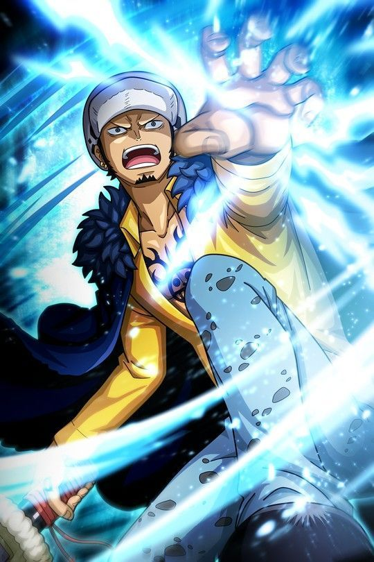

¿Quiénes son los Shichibukais?
Los Shichibukai son un grupo de siete poderosos piratas que, en el mundo de One Piece, han sido reconocidos y autorizados por el Gobierno Mundial para actuar como corsarios
legalizados. Su principal función es mantener el equilibrio de poder entre los gobiernos mundiales y los piratas. Cada uno de los Shichibukai es un pirata formidable,
con habilidades y recursos que los hacen temibles en los mares. Sin embargo, su lealtad al Gobierno Mundial no es absoluta y a menudo actúan en su propio interés,
lo que a veces los coloca en conflicto con otros poderes. A lo largo de la serie, los miembros de los Shichibukai han cambiado debido a varios factores, incluyendo
la traición, la muerte y la revocación de su estatus por parte del Gobierno Mundial. Actualmente no existen porque el Gobierno Mundial prescindió de ellos, otros fueron expulsados
antes y otros lo abandonaron.
Dracule MiHawk (Revocado por disolución)
Dracule Mihawk, conocido como "Hawk Eyes Mihawk" es un espadachín legendario y
fue el antiguo rival de Shanks el Pelirrojo. Mihawk es conocido como el mejor espadachín del mundo.
Mihawk es un hombre de pocas palabras y una presencia imponente. Tiene una personalidad calmada y serena, pero
durante los enfrentamientos muestra un gran entusiasmo por probar las habilidades de los demás espadachines. Aunque
suele ser bastante reservado, muestra un gran respeto hacia aquellos que considera dignos adversarios.
Maestría en la Espada: Mihawk es considerado el espadachín más hábil del mundo. Es capaz de manejar
cualquier tipo de espada con maestría y precisión, y su habilidad con la espada es insuperable. Su estilo de lucha se caracteriza
por su elegancia y eficacia letal.
Espada Negra (Yoru): Porta una espada llamada "Yoru", que se dice que es una de las espadas más poderosas
del mundo. Yoru tiene una hoja negra y afilada como la noche, y Mihawk la utiliza con gran destreza en combate.
Haki de Observación: es usuario del Haki de Observación, que le permite prever los movimientos de sus oponentes
y reaccionar en consecuencia durante el combate. Esta habilidad aumenta su capacidad para anticipar ataques y contraatacar de manera efectiva.
Conocimiento y Experiencia: es un estratega consumado y tiene un profundo conocimiento sobre varios aspectos,
incluyendo la historia, la geografía y las habilidades de otros piratas y espadachines. Su vasta experiencia lo convierte en un oponente extremadamente
peligroso en combate.
Bartholomew Kuma (Revocado por disolución)
Bartholomew Kuma, también conocido como "El Tirano", fue un antiguo miembro de los Siete Guerreros del Mar, un grupo de piratas
reconocidos por el Gobierno Mundial por sus habilidades y servicios. Antes de convertirse en un Cyborg Pacifista, Kuma fue un revolucionario
y un pirata temido.
La personalidad de Kuma es un enigma debido a su transformación en Cyborg Pacifista, que lo convirtió en poco más que una máquina programada para
seguir las órdenes del Gobierno Mundial. Antes de su conversión, se le describía como un hombre de carácter serio y metódico, comprometido con su causa.
Fruta del Diablo - Nikyu Nikyu no Mi: Kuma era el consumidor de la Nikyu Nikyu no Mi, una Fruta del Diablo tipo
Paramecia que le permitía repeler cualquier cosa que tocara, convirtiendo su cuerpo en una especie de "almohada" que podía rebotar y enviar objetos a gran velocidad.
Cyborg Pacifista:
Después de ser capturado por el Gobierno Mundial, Kuma fue sometido a una transformación radical y se convirtió en un Cyborg Pacifista, una máquina de guerra con una
fuerza y resistencia sobrehumanas. Como Cyborg, perdió gran parte de su humanidad y libre albedrío, convirtiéndose en poco más que un instrumento del Gobierno.
Habilidad de Teleportación: Kuma era capaz de utilizar su Fruta del Diablo para enviar a personas o objetos a ubicaciones específicas con un
toque de su palma. Esta habilidad le valió el apodo de "Kuma el Tirano" y lo convirtió en un enemigo formidable en combate.
Boa Hancock (Revocada por disolución)
Boa Hancock es la líder de las Kuja, una tribu de mujeres guerreras en la isla Amazon Lily. Anteriormente
fue una esclava de los Nobles Mundiales,
pero escapó y se convirtió en una pirata. Es la capitana de los Piratas Kuja y es conocida como la "Reina Serpiente".
Hancock es conocida por su belleza incomparable y su actitud altiva. Tiene una personalidad distante y desconfiada hacia los hombres debido a su pasado como esclava.
Sin embargo, es leal a sus amigos y tiene un corazón noble. Desarrolla sentimientos profundos por Luffy, quien la trata con amabilidad y compasión, a pesar de sus inseguridades.
Fruta del Diablo - Mero Mero no Mi: Hancock es la consumidora de la Mero Mero no Mi, una Fruta del Diablo que le otorga el poder de convertir a
cualquier persona que la vea en piedra si siente atracción romántica hacia ella. Esta habilidad es extremadamente poderosa y le da una ventaja significativa en combate.
Habilidades de Combate:
Es una combatiente altamente habilidosa, tanto en combate cuerpo a cuerpo como con su arco y flechas. Su destreza física y agilidad le permiten enfrentarse a oponentes
formidables con facilidad.
Haki de Observación: Hancock es una usuaria del Haki de Observación, lo que le permite anticipar los movimientos de sus oponentes y reaccionar en consecuencia.
Esta habilidad la hace aún más formidable en combate, ya que puede esquivar ataques y detectar la presencia de otros a su alrededor.
Belleza y Encanto: La belleza de Hancock es legendaria y su encanto natural le permite influir en los demás de manera significativa.
A menudo usa su atractivo para manipular situaciones a su favor o para intimidar a sus enemigos.
Líder de las Kuja: Como líder de las Kuja, Hancock ejerce un gran poder y autoridad en la isla Amazon Lily.
Es respetada y temida por su habilidad en combate y su posición como una de las figuras más poderosas de la isla.
Buggy (Revocado por disolución)
Buggy el Payaso es un pirata y un personaje cómico. Antes de convertirse en uno de los
Siete Guerreros del Mar (Shichibukai), Buggy era miembro de los Piratas de Roger y formaba
parte de la tripulación del Rey Pirata Gol D. Roger. Después de la ejecución de Roger, Buggy
emprendió su propio camino como pirata y fundó los Piratas de Buggy. Actualmente ha ascendido a Yonkou
tras la alianza Cross Guild que ha formado con MiHawk y Crocodile.
Buggy es conocido por su personalidad cómica y egocéntrica. Aunque inicialmente se presenta como un personaje
débil y cobarde, su habilidad para dividir su cuerpo en partes gracias a la Fruta Bara Bara no Mi le otorga
una inusual capacidad defensiva. A pesar de su falta de poder relativo, Buggy tiene una habilidad innata para
sobrevivir a situaciones peligrosas y ha adquirido una cierta notoriedad en el mundo pirata.

Fruta Bara Bara no Mi: Buggy consumió la Fruta Bara Bara no Mi, que le
otorga la capacidad de dividir su cuerpo en partes sin sufrir daño. Puede separar sus extremidades y torso a
voluntad, lo que le permite esquivar ataques y desplazarse de manera única.
Control de Cuerpo Dividido:
La habilidad de Buggy para dividir su cuerpo le proporciona cierta inmunidad contra los ataques físicos,
ya que los cortes y golpes simplemente lo separan en partes sin causarle daño real. Sin embargo, su
vulnerabilidad radica en que su cabeza es la parte más crítica.
Influencia en el Mundo Pirata: Buggy obtuvo cierta notoriedad después de su
participación en la Batalla de Marineford y su nombramiento como uno de los Siete Guerreros del Mar.
Aunque gran parte de su fama se basa en situaciones cómicas y malentendidos, Buggy ha logrado capitalizar
su reputación para atraer a seguidores y ganar influencia.
Edward Weevil (Revocado por disolución)
Edward Weevil, conocido como "El Heredero de Barba Blanca", es un pirata que afirma ser el hijo biológico
de Barba Blanca y la "heredera" de su legado. Es uno de los Siete Guerreros del Mar y lidera una banda de piratas que él cree
que son descendientes de los subordinados de Barba Blanca.
Weevil es conocido por su personalidad violenta y su deseo de reclamar la herencia de su supuesto padre. Tiene una obsesión
fanática con Barba Blanca y está dispuesto a eliminar a cualquiera que se interponga en su camino. A pesar de su comportamiento
agresivo, es leal a su "madre", Miss Bakkin, quien lo manipula para sus propios fines.

Inmensa Fuerza Física: Weevil posee una fuerza física extraordinaria,
lo que le permite derrotar a oponentes con facilidad. Su fuerza se ha comparado con la de Barba Blanca, lo que refuerza su afirmación de ser su hijo.
Durabilidad Sobrehumana:
Muestra una resistencia excepcional en combate, siendo capaz de resistir ataques poderosos sin mostrar signos de fatiga o lesión grave.
Armadura Natural:Su cuerpo parece estar cubierto de una especie de armadura natural, lo que le proporciona una mayor
resistencia y protección en combate.
Habilidades de Combate:Aunque no se han mostrado muchas técnicas específicas, Weevil
es un combatiente hábil, prefiriendo el estilo de lucha directo y brutal.
Crocodile (Expulsado antes de disolución)
Crocodile es un infame pirata y antiguo miembro de los Siete Guerreros del Mar. También es el fundador y líder de Baroque Works,
una organización criminal que operaba en el país de Alabasta. Su nombre real es "Sir Crocodile" y es conocido por su título de "Mr. Cero" dentro de Baroque Works.
Crocodile es un individuo ambicioso y despiadado que busca el poder y la riqueza a cualquier costo. Es calculador, astuto y está dispuesto a manipular y traicionar a cualquiera para lograr sus objetivos.
Tiene una confianza inquebrantable en sus propias habilidades y una actitud despectiva hacia aquellos que considera inferiores.
Fruta del Diablo - Suna Suna no Mi: Crocodile es el consumidor de la Suna Suna no Mi, una Fruta del Diablo que le otorga el poder de controlar y manipular la
arena a su voluntad. Puede convertir partes de su cuerpo en arena e incluso deshidratar a sus oponentes con solo tocarlos.
Maestría en el Combate:
Es un combatiente excepcionalmente habilidoso, tanto en combate cuerpo a cuerpo como a distancia. Es un maestro en el uso de su Fruta del Diablo y ha desarrollado
varias técnicas letales que combinan su habilidad con la arena y su ingenio táctico.
Inteligencia y Estrategia: Es un estratega brillante que planifica cuidadosamente sus movimientos y siempre está varios pasos por delante de sus
enemigos. Es capaz de idear planes elaborados y manipular situaciones para su propio beneficio.
Líder de Baroque Works: Como líder de Baroque Works, Crocodile tenía un ejército de agentes a su disposición, cada uno de los cuales tenía habilidades únicas y leales a su causa.
Utilizó esta organización para llevar a cabo sus planes y manipular los asuntos políticos en Alabasta.
Gecko Moria (Expulsado antes de disolución)
Gecko Moria es un pirata y antiguo miembro de los Siete Guerreros del Mar. Es conocido como el capitán de los Piratas
de Thriller Bark y es apodado "El Tirano de las Sombras". Moria es reconocido por su apariencia imponente, con una estatura alta y una estructura corpulenta.
Moria es un individuo perezoso y desinteresado, que prefiere delegar tareas en sus subordinados y evitar el esfuerzo personal siempre que sea
posible. Tiene una personalidad arrogante y confiada en sus propias habilidades, pero también puede volverse rápidamente cobarde cuando enfrenta
la adversidad. A pesar de su naturaleza perezosa, Moria se vuelve vengativo cuando se siente amenazado o humillado.
Fruta del Diablo - Kage Kage no Mi: Moria es el consumidor de la Kage Kage no Mi, una Fruta del Diablo que le otorga el poder
de manipular y controlar las sombras. Puede extraer las sombras de otras personas y darles vida, creando "Zombies" bajo su control.
Ejército de Zombies:
Utilizando su Fruta del Diablo, Moria construyó un ejército de Zombies en Thriller Bark, su nave isla. Estos Zombies están formados por
sombras robadas de otros individuos y pueden poseer habilidades similares a las que tenían en vida.
Ingenio Táctico:A pesar de su naturaleza perezosa, Moria es un estratega astuto que utiliza su ejército de Zombies y sus propias habilidades
para manipular situaciones a su favor. Prefiere confiar en la fuerza bruta y en sus tácticas de distracción para derrotar a sus enemigos.
Trafalgar D. Water Law (Expulsado antes de disolución)
Trafalgar D. Water Law, comúnmente conocido como Trafalgar Law, es el capitán de
los Piratas Heart y es conocido como el "Cirujano de la Muerte". Law es reconocible por su atuendo distintivo, su sombrero de ala ancha y su espada nodachi llamada "Kikoku".
Law es un individuo tranquilo, astuto y reservado. Tiene una presencia calmada y serena, pero también es conocido por su lado sádico y despiadado cuando se enfrenta a
enemigos. A pesar de su apariencia imperturbable, Law es profundamente leal a sus amigos y tiene un sentido de justicia que guía sus acciones.

Fruta del Diablo - Ope Ope no Mi: Law es el consumidor de la Ope Ope no Mi, una Fruta del Diablo que le otorga el poder de crear una
"sala" de espacio donde puede manipular objetos y personas dentro de un área determinada. Esta habilidad le permite realizar cirugías de alto nivel
y controlar áreas de combate.
Técnicas de "Room" (Sala):
Puede crear una "Room" donde puede manipular objetos y personas dentro de un espacio delimitado. Dentro de esta
área, puede cortar y desplazar objetos a voluntad, lo que le otorga una ventaja táctica significativa en combate.
Haki: Law es un usuario competente del Haki, lo que le otorga habilidades adicionales en combate.
Puede utilizar el Haki de Armadura para aumentar la resistencia de su cuerpo y el Haki de Observación para prever los movimientos de sus oponentes.
Espadachín Hábil: Es un espadachín experto y maneja su nodachi, "Kikoku", con gran habilidad. Sus técnicas de espada
combinadas con su Fruta del Diablo lo convierten en un oponente formidable en combate cuerpo a cuerpo.
Aliado Estratégico: Es un estratega consumado y a menudo demuestra una gran inteligencia táctica en situaciones difíciles. Es capaz de planificar con anticipación y adaptarse a circunstancias cambiantes para asegurar la victoria de su equipo.
Donquixote Doflamingo (Expulsado antes de disolución)
Donquixote Doflamingo, apodado "El Diablo", es un pirata infame, ex-Shichibukai y el antiguo Rey del Reino de Dressrosa. Es el líder de los Piratas
Donquixote y es reconocido por su apariencia extravagante, su vestimenta rosada y
su comportamiento despiadado.
Doflamingo es un individuo manipulador, cruel y sin escrúpulos. Tiene una personalidad carismática y encantadora que oculta su verdadera naturaleza
sádica y despiadada. Es un maestro en la manipulación y disfruta causando caos y sufrimiento a su alrededor. A pesar de su apariencia
despreocupada, Doflamingo es extremadamente inteligente y calculador, y siempre está varios pasos por delante de sus enemigos.
Fruta del Diablo - Ito Ito no Mi: Doflamingo es el consumidor de la Ito Ito no Mi, una Fruta del
Diablo que le otorga el poder de crear y controlar hilos a voluntad. Puede usar estos hilos para cortar, atrapar y controlar a sus
oponentes, así como para crear estructuras complejas como su "Parasito", una copia en miniatura de Dressrosa suspendida en el aire.
Maestro del Haki: es un usuario avanzado del Haki, lo que le otorga habilidades adicionales en combate. Es especialmente
hábil en el uso del Haki de Armadura y el Haki de Observación, lo que aumenta su resistencia y le permite prever los movimientos de sus oponentes. También
posee el haki del Rey.
Líder Carismático: Es un líder carismático que inspira lealtad y devoción en sus seguidores. A lo largo de su reinado en Dressrosa,
mantuvo un control firme sobre la población mediante la manipulación y el miedo, convirtiendo a la isla en su propio reino personal.
Jinbe (Abandonó el puesto)
Jinbe, también conocido como el "Caballero del Mar" o "Caballero Pez", se une a los Piratas del Sombrero de Paja durante el arco de Whole
Cake Island. Inicialmente, es el capitán de los Piratas del Sol y un antiguo miembro de los Siete Guerreros del Mar. Su sueño es crear una sociedad pacífica
entre humanos y gyojin en la isla de Fish-Man.
Destaca por su personalidad serena y reflexiva . Su sabiduría y experiencia se reflejan en su comportamiento tranquilo y en su lealtad inquebrantable hacia la tripulación.
Aunque posee habilidades formidables en combate y una fuerza física impresionante, Jinbe es amable y respetuoso, abogando por la justicia y la coexistencia pacífica entre
humanos y gyojin. Su presencia aporta equilibrio y sabiduría al grupo, convirtiéndolo en un valioso miembro de los Piratas del Sombrero de Paja.
Habilidades de Combate y Karate Gyojin: Jinbe es un maestro en el Karate Gyojin, un estilo de lucha basado en las habilidades
físicas mejoradas de los gyojin. Sus habilidades en combate son excepcionales, y es conocido por su fuerza y resistencia impresionantes, así como por su
capacidad para manipular el agua.
Haki del Armamento y de la Observación: Estas habilidades le proporcionan una ventaja adicional en el combate, permitiéndole
fortalecer sus ataques y percibir la presencia y los movimientos de los demás.
Navegante y Timonel:
Es un hábil navegante y timonel, habilidades que se derivan de su experiencia en el mar y su conexión con el mar como un gyojin. Su conocimiento sobre
las corrientes marinas y la navegación es esencial para la tripulación.
Marshal D. Teach (Abandonó el puesto)
Marshall D. Teach, conocido comúnmente como Barbanegra, es un pirata y uno de
los personajes más significativos. Es el capitán de los Piratas Barbanegra y
fue miembro de la tripulación de Shirohige (Barbablanca) antes de convertirse en pirata. Barbanegra es
un antagonista central en la serie y es conocido por su ambición desmedida y su papel en eventos
cruciales.
Barbanegra es retratado como un individuo astuto y ambicioso. Su deseo de alcanzar la grandeza y su
creencia en la "voluntad del D." lo han llevado a realizar acciones audaces y peligrosas. Aunque
inicialmente se presenta como un hombre educado y tranquilo, su ambición sin restricciones y su
falta de remordimiento por sus acciones lo convierten en un villano formidable y complejo.

Fruta del Diablo - Yami Yami no Mi: Barbanegra consumió
la Yami Yami no Mi, una Fruta del Diablo tipo Logia que le otorga el poder de la oscuridad. Con
esta fruta, puede crear y controlar la oscuridad a su alrededor. La oscuridad de Barbanegra es única,
ya que tiene la capacidad de absorber otras Frutas del Diablo y anular sus poderes.
Habilidad para Absorber Frutas del Diablo:
Una de las habilidades más inusuales y poderosas de Barbanegra es su capacidad para absorber otras Frutas del
Diablo al contacto directo con el usuario después de que este muera. Esta habilidad le permite acumular múltiples
poderes de Frutas del Diablo simultáneamente, convirtiéndolo en un oponente temible y versátil.
Participación en la Guerra en Marineford:Barbanegra desempeñó un papel
crucial durante la Guerra en Marineford, aprovechando el caos para robar los poderes de la Fruta
del Diablo del fallecido Shirohige. Este evento marcó el ascenso de
Barbanegra al estatus de Yonkou, uno de los cuatro emperadores piratas más poderosos del mundo.
Recompensas